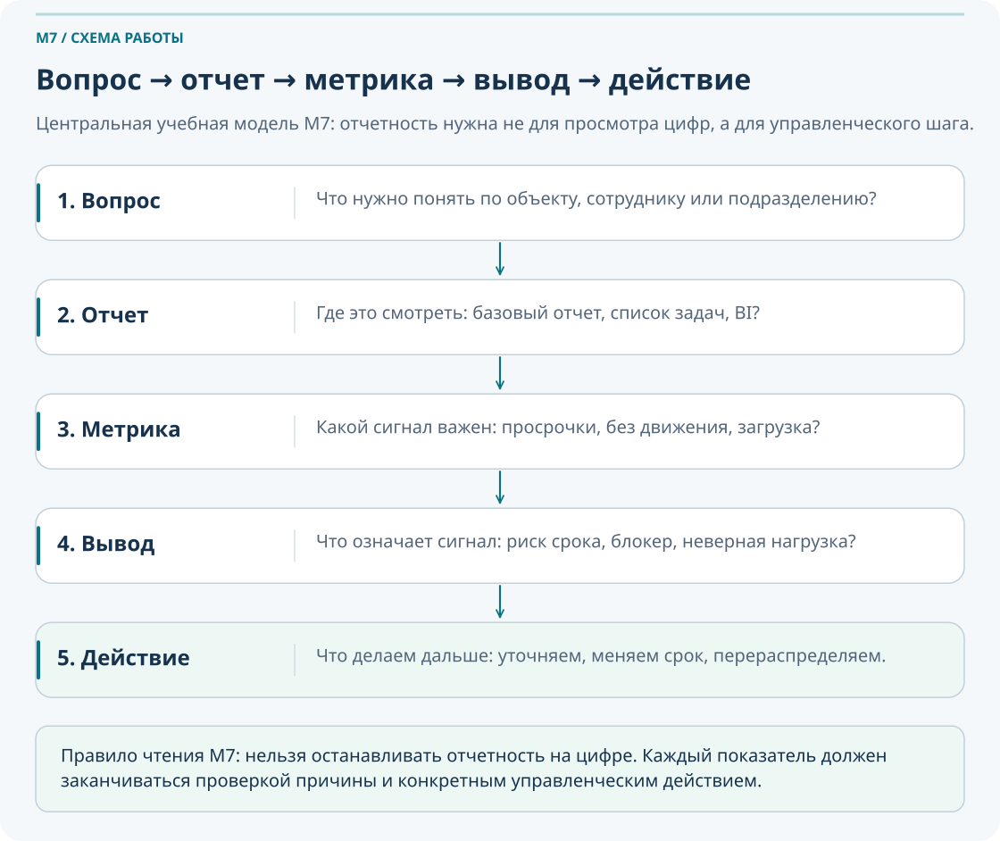
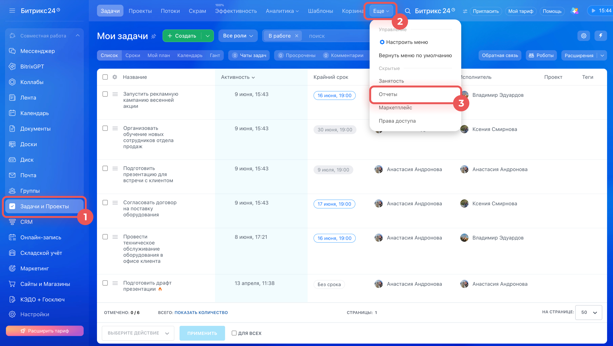
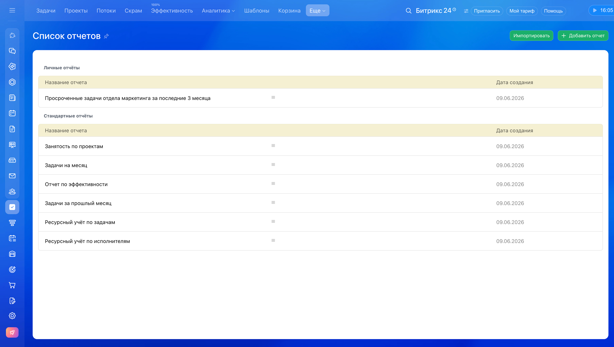
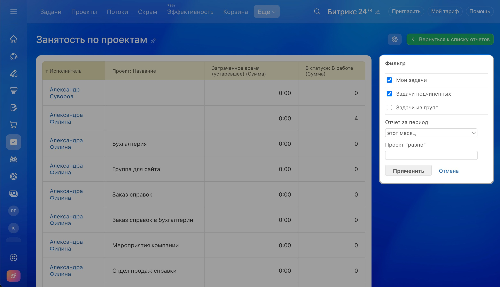
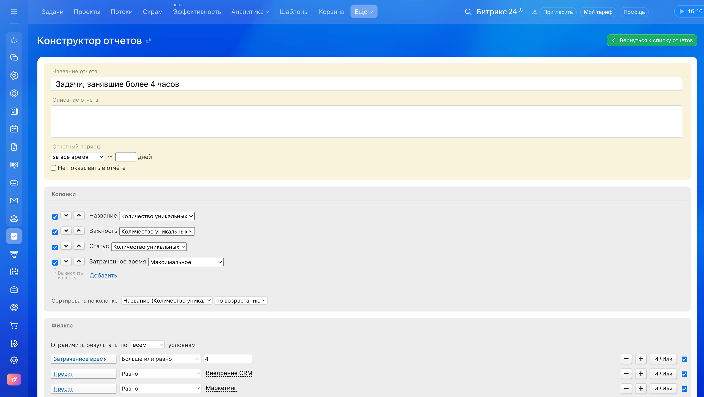
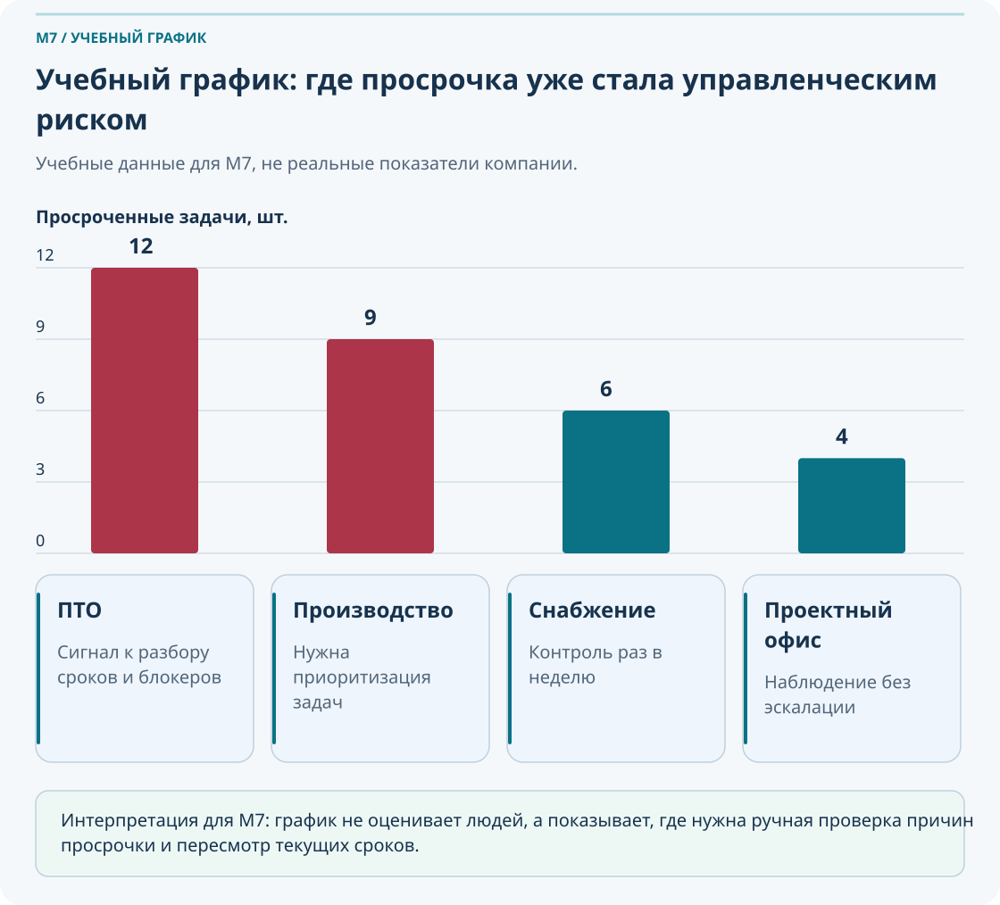
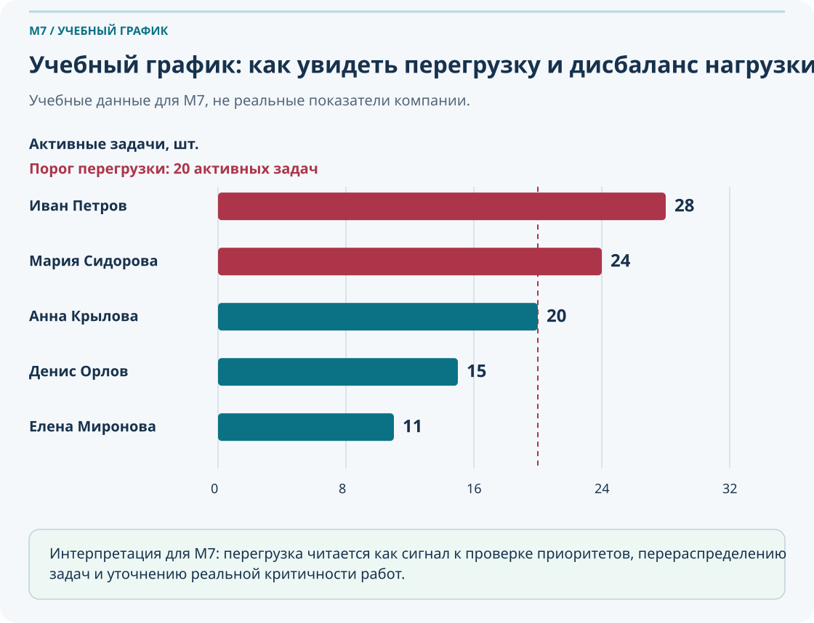
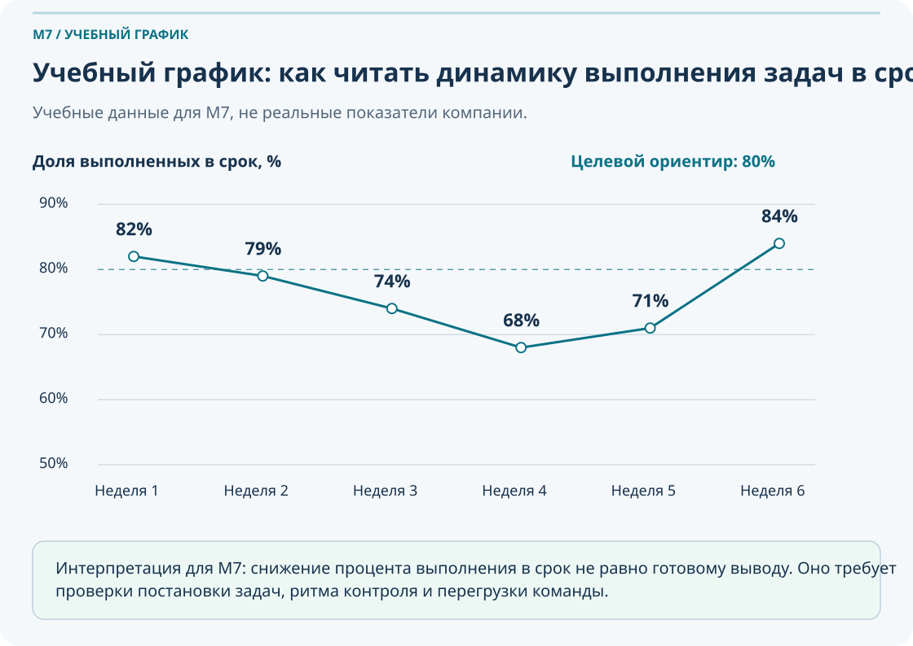
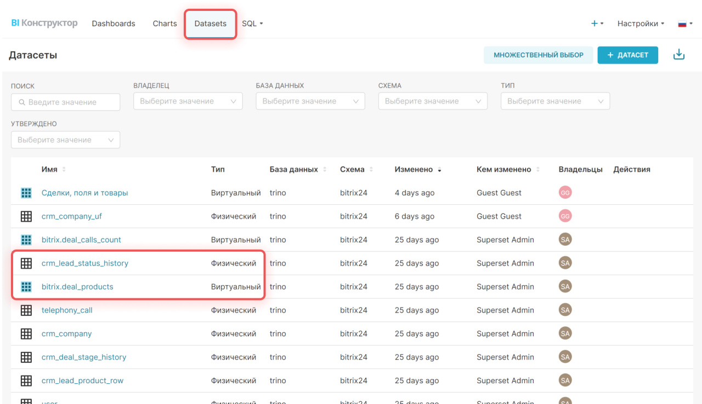
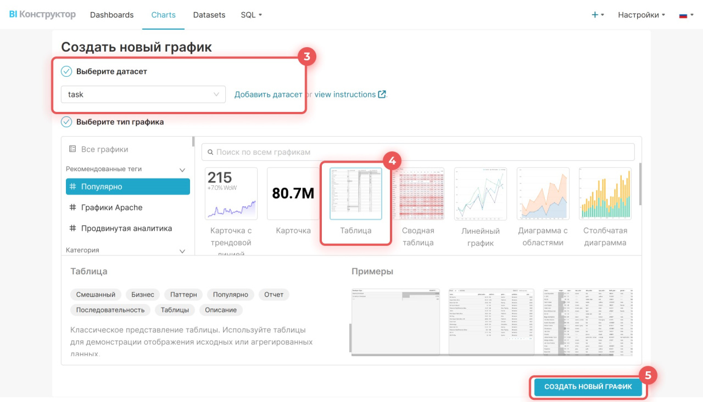

Базовая отчетность и метрики в Битрикс24
Этот модуль учит не просто открывать отчеты, а превращать данные по задачам и проектам в управленческое действие: видеть просрочки, находить задачи без движения, оценивать загрузку команды и формулировать короткий вывод для планерки.
Что важно понять в M7
Отчет в Битрикс24 нужен не для витрины цифр. Его задача — показать отклонение, помочь проверить причину и дать основание для действия.
Результат прохождения
сотрудник умеет открыть базовый отчет, применить фильтры, увидеть риски и предложить действие
Что стоит запомнить
Хорошая отчетность = корректные задачи + понятные фильтры + 4–6 метрик + управленческий вывод.
Если задачи ведутся формально, без сроков, актуальных статусов и комментариев, отчет будет показывать не рабочую картину, а хаос в данных.
Паспорт модуля
Место в курсе
после M4, M5 и M6
Входной уровень
пользователь умеет работать с задачами, проектами, сроками и статусами
Целевая аудитория
сотрудники, руководители, ПТО, РП, координаторы проектов
Итоговый результат
сотрудник умеет открыть базовый отчет, применить фильтры, увидеть риски и предложить действие
сотрудник умеет открыть базовый отчет, применить фильтры, увидеть риски и предложить действие
1. Отчетность как управленческий инструмент
В M7 важно развести четыре сущности: отчет, метрика, вывод и действие. Пока пользователь не понимает эту связку, он либо смотрит на цифры без пользы, либо пытается оценивать людей только по количеству задач.
Что нужно понять по объекту, сотруднику или подразделению?
Где это посмотреть: список задач, отчет по сотруднику, проекту, срокам?
Какой показатель дает сигнал: просрочки, без движения, без срока, загрузка?
Что означает отклонение: риск, блокер, неверный срок, перегрузка?
Что делаем: уточняем, перераспределяем, меняем сроки, поднимаем эскалацию?

| Вопрос | Где смотреть | Метрика | Что делать |
|---|---|---|---|
| Какие задачи горят? | Мои задачи / задачи проекта | Просроченные задачи | Уточнить причины, обновить сроки, проверить блокеры |
| Кто перегружен? | Отчет по сотрудникам | Активные задачи + просрочки | Перераспределить часть задач, уточнить приоритеты |
| Где объект буксует? | Отчет по проекту | Задачи без движения | Проверить сообщения в чате и результаты задачи, найти зависимость или блокер |
| Насколько команда дисциплинирована? | Отчет по срокам | Выполнение в срок | Пересмотреть постановку задач и ритм контроля |
Неправильный подход
- Смотреть на много показателей сразу без вопроса.
- Судить о сотруднике только по количеству задач.
- Считать, что любая просрочка означает плохую работу.
Правильный подход
- Сначала формулировать вопрос, потом выбирать отчет.
- Проверять отклонение вручную на нескольких задачах.
- Связывать цифру с действием, а не с формальной оценкой.
Отчетность в Bitrix24 — это инструмент диагностики. Она помогает принять решение по срокам, нагрузке и рискам, а не заменить здравый смысл, разговор с командой и проверку проблемной задачи.
2. Качество данных: почему отчет может врать
Любая отчетность зависит от того, насколько качественно ведутся задачи. Если в задачах нет дисциплины, цифры становятся красивыми или страшными, но бесполезными для управления.
Плохие задачи искажают отчетность. Задачи без сроков, без результата, со старыми статусами и без комментариев создают ложную картину состояния проекта.
Без срока
Невозможно понять риск по срокам и расставить приоритеты.
Формальный срок
Просрочка возникает не из-за работы, а из-за неправильной постановки.
Неактуальный статус
Отчет показывает задержку, хотя работа уже движется или завершена.
Нет сообщений о ходе работы
Нельзя отделить блокер, зависимость и просто забытые задачи.
| Что искажает отчет | К чему это приводит | Что делать |
|---|---|---|
| Задачи без срока | Нет контроля по дедлайнам | Вернуть постановщику на уточнение или согласовать срок |
| Закрытие без результата | Кажется, что работа завершена, но результат не подтвержден | Фиксировать итог в результатах задачи, включая отмеченные сообщения из ее чата |
| Задачи вне проекта | Объектный отчет неполный | Привязать задачи к проекту или рабочей группе |
| Дубли и «мешок-задачи» | Нагрузка искажается, анализ становится нечестным | Дробить крупные задачи и убирать дубли |
Возьмите 10 задач по своему проекту и проверьте: у всех ли есть срок, понятный результат, актуальный статус и комментарий по задержке, если задача просрочена.
3. Базовые отчеты по задачам: с чего начинать
Откройте Задачи → Ещё → Отчеты. Если пункта нет, проверьте права и доступность инструмента у администратора. Актуальная справка по отчетам задач.
На старте сотруднику и руководителю не нужен сложный BI-слой. Достаточно уверенно работать с несколькими базовыми отчетами и фильтрами, которые отвечают на повседневные вопросы управления.
Мои задачи
Подходят для личного контроля: что просрочено, что на сегодня, где нет движения, что без срока.
Отчет по сотруднику
Нужен, чтобы сравнивать активную нагрузку, просрочки и объем задач 2–3 исполнителей.
Отчет по проекту / объекту
Показывает состояние задач в рамках одного контра: сроки, узкие места, проблемные этапы.
Отчет по срокам
Помогает увидеть, насколько команда выполняет задачи в срок и где падает дисциплина планирования.


Фильтры
- Период: последние 2–4 недели
- Проект / объект
- Ответственный
- Статус
- Только активные / просроченные
Если задача обучения M7 — уверенно видеть риски, начните с 4–6 показателей и повторяемого набора фильтров. Не пытайтесь с первого раза строить большой аналитический портрет подразделения.
4. Стандартные и персональные отчеты
В Bitrix24 полезно разделять готовые стандартные отчеты и персональные отчеты, которые вы настраиваете под свои вопросы. Это помогает не перегружать новичка и при этом не упираться в ограничения базового набора.
Стандартные отчеты
Это готовые read-only отчеты Bitrix24. Их нельзя править напрямую, но можно копировать, экспортировать и использовать как отправную точку.
- Tasks this month
- Tasks for last month
- Efficiency report
- Involvement in projects
- Task resource tracking
- Employee resource tracking
Персональные отчеты
Настраиваются под конкретный вопрос: период, проект, статус, колонки, сортировка и нужный набор показателей для вашей роли или планерки.
- Отчет по одному объекту
- Срез по сотруднику
- Контроль просрочек за неделю
- Краткий отчет для руководителя


| Вопрос | Что взять на старте | Когда переходить к персональному отчету |
|---|---|---|
| Что происходит с задачами в этом месяце? | Стандартный отчет по задачам месяца | Когда нужен отдельный фильтр по объекту или подразделению |
| Кто перегружен? | Resource tracking | Когда важно сравнить конкретные роли или команду объекта |
| Насколько команда эффективна? | Efficiency report | Когда нужен свой набор колонок и учет локальных правил |
Для одного учебного объекта соберите персональный отчет: выберите период, добавьте проектный фильтр, оставьте только нужные колонки, отсортируйте по риску и сохраните шаблон для повторного использования.
5. Базовые метрики M7
Учебное определение «в срок». Для этого курса доля равна числу задач, завершенных не позже согласованного дедлайна, деленному на число завершенных за тот же период задач с дедлайном. При нулевом знаменателе пишем «нет данных». Задачи без срока показываем отдельно. Не подменяйте этой формулой встроенную «Эффективность»: у нее свое определение. Прежде чем сравнивать отчеты, согласуйте период, поле даты и правила учета переносов. Что означают поля стандартного отчета.
Метрика — это не итоговый ответ, а сигнал на проверку. Хороший набор для M7 — 4–6 показателей, которые легко объяснить команде и привязать к действию.
Выполнение в срок
Показывает дисциплину планирования и качество постановки задач.
Просроченные задачи
Сигнал о риске по срокам, но не автоматический ярлык плохой работы.
Активная загрузка
Нужна для оценки перегрузки и баланса между сотрудниками.
Задачи без движения
Помогают находить забытые, зависшие и блокированные задачи.
Задачи без срока
Показывают слабое место в постановке и управлении дедлайнами.
Завершено за период
Помогает видеть ритм закрытия задач и сравнивать его с нагрузкой.



Все три графика выше учебные. Они созданы внутри проекта как безопасные примеры чтения сигналов и не отражают реальные данные какой-либо компании.
| Метрика | Что спрашиваем | Что проверяем вручную | Типовое действие |
|---|---|---|---|
| Просрочки | Что горит? | Есть ли комментарий, блокер, согласованный перенос? | Уточнить причину, обновить срок, снять блокер |
| Без движения | Что зависло? | Когда был последний комментарий или изменение? | Связаться с ответственным, проверить зависимость |
| Без срока | Что неуправляемо? | Нужен ли срок и кто должен его поставить? | Вернуть задачу на уточнение |
| Активная загрузка | Кто перегружен? | Какие задачи действительно приоритетны? | Перераспределить нагрузку |
6. Практика чтения отчета и управленческого вывода
Ниже — рабочий набор упражнений, который переводит M7 из теоретического модуля в прикладной. Здесь важно не просто посмотреть цифры, а научиться формулировать короткий вывод по схеме: статус → риски → причины → действия.
Три уровня практики
Открыть свои задачи, найти просрочки, задачи на сегодня, задачи без срока и сформулировать 3 приоритета на день.
Открыть отчет по проекту, выбрать период, определить просрочки, найти задачи без движения и подготовить краткий вывод.
Собрать отчет для планерки, выбрать 4–6 метрик, проверить проблемные задачи и предложить корректирующие действия.
Практика 1. Отчет или метрика?
- Список задач по объекту за апрель.
- Процент выполнения задач в срок.
- Количество просроченных задач по сотруднику.
- Таблица задач ПТО за неделю.
- Доля задач без движения.
- Дашборд по проектам.
Подсказка: отчет — это форма представления данных, а метрика — отдельный показатель внутри этой формы.
Практика 2. Метрика → действие
- У сотрудника 28 активных задач и 7 просрочек.
- По объекту 6 задач без движения больше 7 дней.
- Выполнение в срок упало с 80% до 55%.
- В отчете много задач без срока.
- Один проект забирает 70% загрузки команды.
Задача: для каждой ситуации предложите проверку причины и конкретное управленческое действие.
Практика 3. Короткий отчет по объекту
Хороший короткий отчет не пересказывает весь список задач. Он показывает руководителю состояние объекта и подсказывает, что делать дальше.
7. BI Конструктор как продвинутый уровень
Отчеты BI Конструктора используют кеш: данные после открытия могут сохраняться на час. При расхождении со списком задач проверьте период, права, фильтры и время обновления. При наличии прав обновите данные в общих настройках конструктора. Практика: запишите время обновления отчета и сверяйте показатель на трех конкретных задачах. Официальные ответы об обновлении данных.
BI Конструктор нужен не вместо базовых отчетов, а после них. Пока команда не научилась работать с качеством задач, фильтрами и короткими управленческими выводами, сложный BI-уровень только увеличит шум.
Когда BI Конструктор уже нужен
- Нужны дашборды для нескольких руководителей.
- Требуется объединять несколько наборов данных.
- Нужны более гибкие графики и визуальные срезы.
- Базовых отчетов уже не хватает для регулярной аналитики.
Что новичку пока не нужно
- SQL-запросы и сложные объединения датасетов.
- Глубокая BI-архитектура.
- Сложные KPI-модели ради самих моделей.
- Сторонние BI-системы как обязательный этап.


На следующем уровне вы будете работать с наборами данных по задачам и проектам: task, task_stages, task_efficiency, flow, socialnetwork_group и другими. Но для M7 достаточно понимать, что BI Конструктор — это отдельный слой аналитики, а не обязательный первый шаг.
8. Сквозная практика: «От списка задач к управленческому выводу»
Этот сценарий связывает весь модуль M7 в единый маршрут и показывает полный цикл работы с базовой отчетностью.
Берем список задач
Определяем объект, сотрудника или подразделение для анализа.
Настраиваем фильтры
Выбираем период, проект, ответственных, статусы и нужный тип задач.
Читаем метрики
Смотрим на 4–6 показателей: просрочки, без движения, без срока, загрузку, выполнение в срок.
Выбираем сигнал
Определяем главное отклонение, которое требует проверки.
Проверяем вручную
Открываем 2–3 проблемные задачи и смотрим реальные причины.
Формулируем вывод
Пишем: статус, риски, причины, действия.
Назначаем действие
Перераспределяем, уточняем сроки, возвращаем задачи на доработку или эскалируем.
Проверяем повторно
Фиксируем дату следующего обзора и сравниваем результат.
9. Что делать, если…
Если отчет показывает много просрочек
Разделите просрочки на критичные, технические, зависимые и вызванные плохой постановкой. Не все просрочки одинаковы по смыслу и реакции.
Если у задач нет сроков
Верните такие задачи постановщикам на уточнение или согласуйте сроки с ответственными. Без срока задача не должна участвовать в нормальной отчетности.
Если сотрудник перегружен
Проверьте приоритеты, реальную активность по задачам и возможность перераспределения. Не ограничивайтесь выводом «у него много задач».
Если в отчете много задач без движения
Проверьте последний комментарий, наличие блокера, зависимость от другого подразделения и адекватность постановки задачи.
Если цифры кажутся неправильными
Сначала проверьте период, фильтры, статусы и привязку к проекту. Часто ошибка не в отчете, а в настройке выборки.
Если руководитель смотрит слишком много показателей
Сократите набор до 4–6 метрик, которые можно обсудить на планерке и превратить в действие.
Если отчет не приводит к решениям
Добавьте обязательный финальный блок: статус, риск, причина, действие и дата повторной проверки.
Если стандартного отчета недостаточно
Скопируйте стандартный отчет, настройте персональный вариант или переходите к BI Конструктору как к следующему уровню, а не к первому шагу.
10. Типичные ошибки в отчетности
Смотреть на отчет без заранее сформулированного вопроса.
Судить о сотруднике только по числу задач без учета сложности, контекста и результата.
Верить любой просрочке, не открывая задачу и не проверяя реальную причину.
Использовать слишком много показателей, которые не приводят к решениям.
Не проверять качество данных: статусы, сроки, проектную привязку, комментарии.
Не сохранять рабочий фильтр или шаблон отчета, из-за чего анализ каждый раз начинается заново.
11. Самопроверка
Ниже — вопросы на понимание логики M7. Они проверяют не знание названий кнопок, а способность читать отчет и превращать его в решение.
Вопросы
- Чем отчет отличается от метрики?
- Для чего нужен отчет по задачам?
- Что чаще всего искажает отчетность?
- Какая метрика показывает риск срыва сроков?
- Как увидеть перегрузку сотрудника?
- Что делать с задачами без движения?
- Почему нельзя оценивать сотрудника только по количеству задач?
- Что должен содержать короткий вывод по объекту?
- Когда достаточно стандартного отчета?
- Когда стоит переходить к BI Конструктору?
Проверить свои ответы
- Отчет — это форма представления данных, метрика — конкретный показатель внутри нее.
- Чтобы увидеть состояние работы, риск и принять действие, а не просто получить таблицу.
- Некачественные задачи: без сроков, со старыми статусами, без комментариев и вне проекта.
- Просроченные задачи и падение выполнения в срок.
- Посмотреть активные задачи вместе с просрочками и проверить реальные приоритеты.
- Проверить последние действия, комментарии, блокеры и ответственного.
- Потому что число задач без контекста не показывает сложность, качество работы и внешние зависимости.
- Статус, риски, причины, действия и дату повторной проверки.
- Когда готовый набор метрик уже отвечает на рабочий вопрос без сложной настройки.
- Когда базовых отчетов и фильтров уже не хватает для регулярной аналитики и дашбордов.
12. Итоговое практическое задание
Сценарий: по учебному объекту или реальному проекту нужно подготовить краткий отчет для планерки так, чтобы руководитель сразу увидел состояние, риски и необходимые действия.
- Выберите объект или проект.
- Задайте период анализа: последние 2–4 недели.
- Откройте отчет или список задач.
- Отфильтруйте задачи по проекту.
- Найдите активные, просроченные, без движения, без срока и завершенные задачи.
- Оцените загрузку сотрудников.
- Выберите 4–6 ключевых метрик.
- Проверьте вручную 3 проблемные задачи.
- Сформулируйте вывод: статус, риски, причины, действия.
- Сохраните фильтр или шаблон отчета.
- Укажите дату повторной проверки.
Критерии успешного прохождения
- Сотрудник понимает различие между отчетом, метрикой и выводом.
- Сотрудник умеет открыть базовый отчет по задачам и настроить фильтры.
- Сотрудник умеет находить просрочки, задачи без движения и задачи без срока.
- Сотрудник понимает, как оценивать загрузку без поверхностных выводов.
- Сотрудник умеет подготовить короткий управленческий вывод для планерки.
- Сотрудник понимает, когда достаточно базовой отчетности, а когда нужен BI Конструктор.